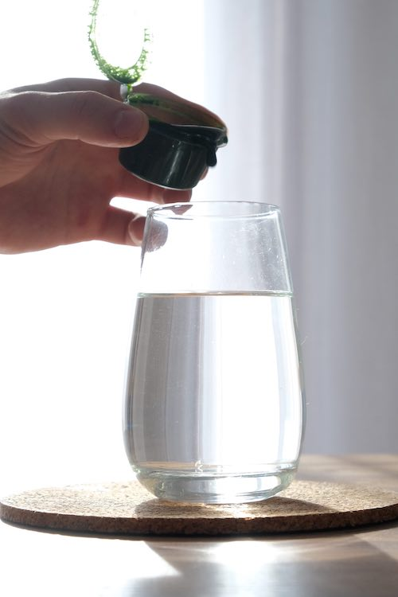
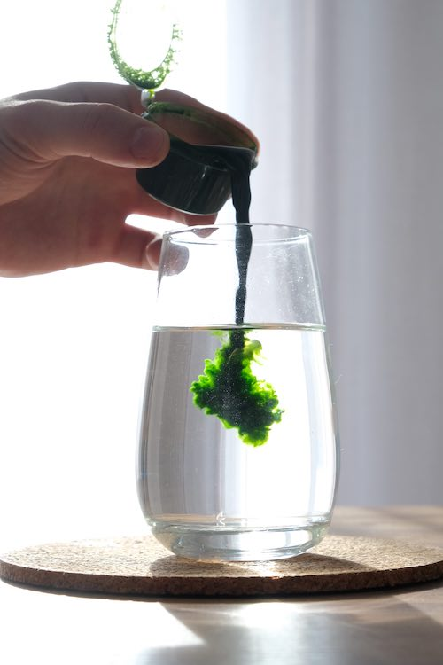
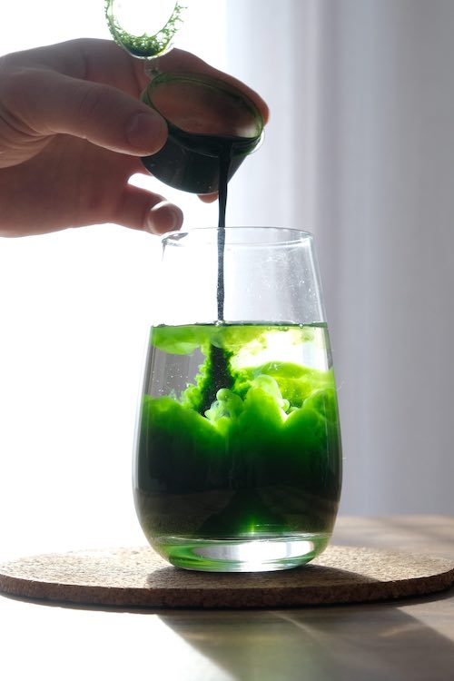
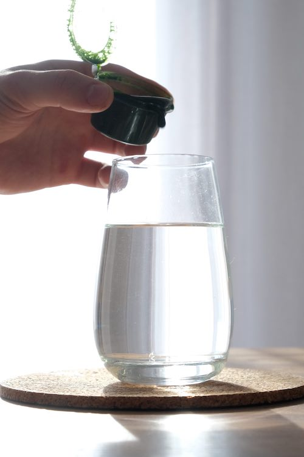
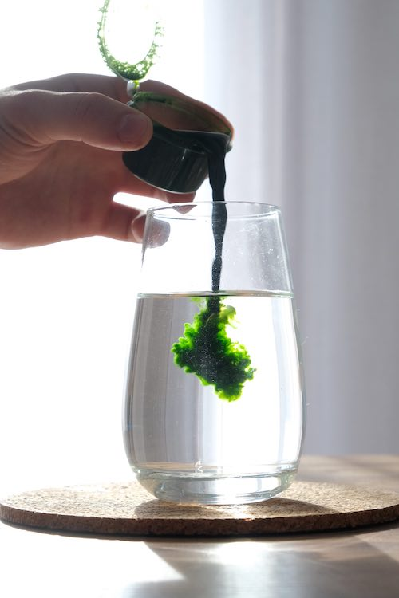
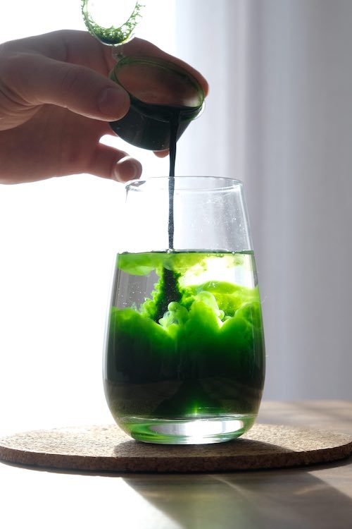

КАК ПИТЬ
ВИТГРАСС?
1
Возьмите порцию сока из морозильной камеры.
Поместите баночку в воду комнатной температуры (не более 30° С).
2
Подождите 3-5 минут. Смешайте размороженный сок с чистой водой.
Не используйте металлическую тару.
3
Тщательно перемешайте напиток деревянной палочкой.
Они прилагаются в комплекте.
*
Мы рекомендуем употреблять Витграсс в первой половине дня,
так как Сок Ростков Пшеницы обладает бодрящим эффектом
и может улучшить ваше самочувствие на протяжении всего дня.
Кроме того, утреннее употребление Витграсса поможет
вам получить максимальную пользу от витаминов
и антиоксидантов, которые содержатся в соке ростков пшеницы.
 




